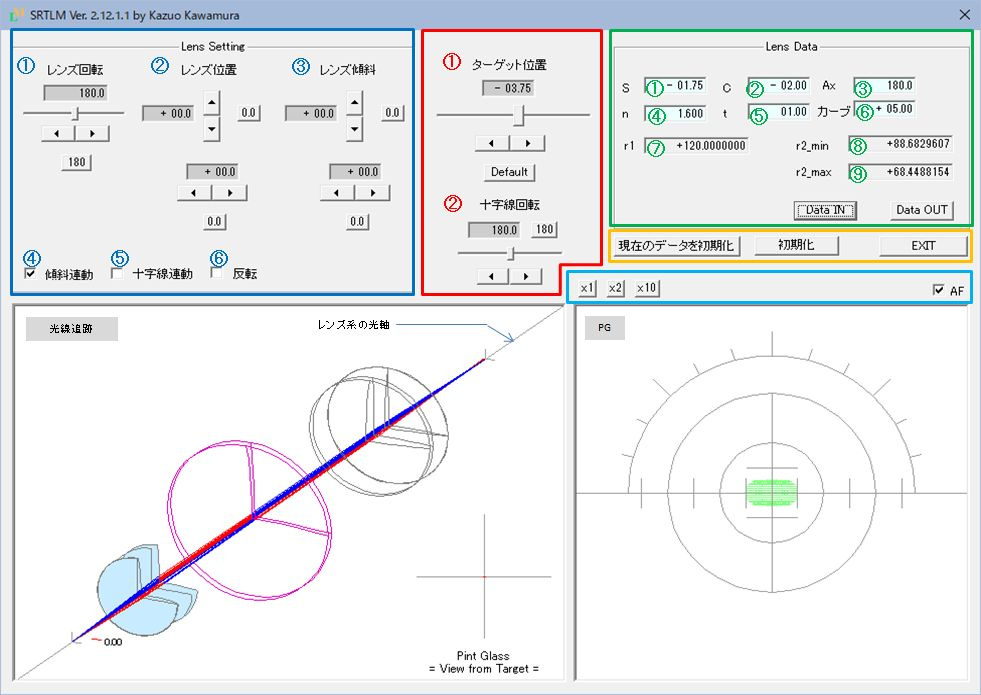

SRTLM取り扱い説明書
レンズメーターというと最近ではオートレンズメーターが主流となり、 手動式レンズメーターに振れたことがない方もいらっしゃるかもしれません。 レンズメーター自体はメガネの仕事に従事する方にとっては今でも必須のアイテムだと思います。
手動式のレンズメーターを通してメガネレンズの性質を学んで頂きたいと思って、シミュレーションツールを作成しました。
以下、SRTLMと略記します。
レンズメーターとメガネレンズについてざっくりとお知りになりたい方は レンズメーターとは をご覧下さい。
特徴
-
単焦点レンズ(球面及びトーリック)の測定がシミュレーションできます。
-
ピント合わせ。
-
レンズの移動に伴うコロナ像(※)の動き(上下・左右の移動、回転)、目盛盤の回転、レンズの傾斜による非点収差の発生など。
※コロナ像は、光軸に沿って前後に移動するターゲットと呼ばれる小さな円盤に、同心円状に36個のピンホールが開いていて、 ピンホールを通った光線束がピントグラスで像として視覚化されるものです。
ターゲットにはこのコロナターゲットとコロナターゲットにクロスターゲット(十時のスリット)が組み合わさったタイプもあります。
本ツールはコロナターゲットを前提にしています。
-
-
被検レンズの形状を確認できます。
-
被検レンズが3Dで描画(強/弱主経に沿った断面図を含む)されます。
-
被検レンズの移動、回転、傾斜をリアルタイムに再現します。
-
-
結像状態が3Dで再現されます。
-
ターゲットから発した光線がピントグラスに像を結ぶまでの様子がシミュレーションされます。
-
被検レンズの移動、回転、傾斜にリアルタイムに対応します。
-
※実際のレンズメーターでは結像状態を見ることはできませんが
SRTMはシミュレーションツールなので、ray tracing(光線追跡)の結果を描画しています。
-
-
シミュレーションしたいレンズを作成し、保存、呼び出しができます。
-
作成は球面度数、円柱度数、屈折率、中心厚、前面カーブの指定ができます。
-
作成したレンズは保存、呼び出しが可能です。
-
実際のレンズメーター(手動式の望遠鏡型レンズメータを前提)と比較して、SRTMで省かれている機能
-
視度調整
本来のレンズメーターではピントグラスの右に接眼レンズ系があり、 視度調整を行ってピントグラスを鮮明視させる必要がありますが、SRTMでは省かれています(図1の結像図参照)。
-
プリズムコンペンセーター
SRTMではプリズムレンズの測定を想定していません、またプリズムレンズの作成はできません。
従って、プリズムコンペンセーター用のレンズ系も省かれています(図1の結像図参照)。
前提条件
-
SRTMを使用されるに当たって、ある程度メガネレンズの知識があることを前提としていますが、 レンズメーターとは を参考にして頂ければ、特に問題なく操作できると思います。
-
レンズの「屈折力」/「度」/「度数」は同じ意味で使われます。 この取り扱い説明書ではできるだけ「屈折力」と表現するようにしています。
起動時の画面
図1にSRTLM起動時の画面を示します。
既定のレンズデータが[Lens Data]セクションに表示されます。
乱視補正を含むレンズの場合は、
2カ所で
ピントが合います。
SRTLMは(-)側でピントが合ったときの状態が起動時に描画されます。
これは仕様です。
セクション毎に色分けして、各機能を説明して行きます。
※最初に説明しておきますが、青枠(Lens Settingsセクション)、赤枠(全般セクション)、緑枠(Lens Dataセクション)に表示されている
テキストボックスについてです。以下のルールをお守り下さい。
| 青枠 | 背景グレー | 直接数値は入力しないで下さい | スライダー、スピンボタンで変更します |
| 赤枠 | 背景グレー | 直接数値は入力しないで下さい | スライダー、スピンボタンで変更します |
| 緑枠 | 背景水色 | 直接数値入力できます | 矢印キーでも自由に変更できます |
※以後、レンズメーターはLM、ピントグラスはPGと略記します。

図1 画面構成
図1でセクション毎に色分けされた機能の一覧を以下に示します。
下線付きの機能名をクリックすると、機能の詳細に移動します。
| [Ⅰ] | 画面上部 | |||
| (1) | 全般 | LMに付随する機能として操作する部位 | ||
| ① | ターゲット位置 | ターゲットを光軸上で前後に移動させる機能 (LMの測定ダイヤルに相当) |
||
| ② | 十字線回転 | PGの十字線を回転させる機能 (LMの十字線回転ダイヤルに相当) |
||
| (2) | Lens Settings | 測定者が手動で行う操作 | ||
| ① | レンズ回転 | 乱視レンズを測定する場合に必要となる操作 | ||
| ② | レンズ位置 | コロナ像をPGの中心に位置させるために行う レンズの上下左右移動 |
||
| ③ | レンズ傾斜 | 被検レンズ裏面と光軸の成す角度 (ユーティリティ機能) | ||
| CheckBox | ユーティリティ機能 | |||
| ④ | 傾斜連動 | レンズ移動とレンズ裏面のカーブを連動させる機能 レンズ裏面はLMのレンズ受けに接しているため、レンズの上下左右移動で、レンズ裏面のカーブに従ってレンズの傾斜が変化します。 通常、レンズを動かした後で固定されたときは傾斜しますので、デフォルトでチェックが入っています |
||
| ⑤ | 十字線連動 | レンズ移動が任意の角度の十字線に追随する機能 チェックするとレンズの移動で、任意の角度の十字線に追随するようになります(実際のLMでは不可能な機能です)。 将来用の機能として設けたもので、デフォルトではチェックは入っていません |
||
| ⑥ | 反転 | 被検レンズの向きを反転させる機能 メガネレンズがメニスカス形状であることと、レンズの中心厚がレンズの向きでどのような影響を与えるか、シミュレーションできます |
||
| (2) | Lens Data | 被検レンズの諸データ | ||
| ① | 球面屈折力 | =入力可= 詳細参照 | ||
| ② | 円柱屈折力 | 同上 | ||
| ③ | 円柱レンズの軸方向 | 同上 | ||
| ④ | 屈折率 | 同上 | ||
| ⑤ | 中心厚 | 同上 | ||
| ⑥ | レンズ前面のカーブ | 同上 | ||
| ⑦ | レンズ前面の半径 | =入力不可= レンズデータに基づいた計算結果が表示される | ||
| ⑧ | レンズ裏面弱主経方向の半径 | 同上 | ||
| ⑨ | レンズ裏面強主経方向の半径 | 同上 | ||
| DATA IN | 保存されているレンズデータの読み込み | |||
| DATA OUT | 作成したレンズデータの保存 | |||
| (4) | その他 | |||
| 現在のデータを初期化 | 設定されたレンズの初期状態に戻る | |||
| 初期化 | 起動時または[Data In]時の画面に戻る | |||
| EXIT | SRTLMの終了 | |||
| x1 | コロナ像の拡大率(デフォルト) | |||
| x2 | コロナ像の拡大率(2倍) | |||
| x10 | コロナ像の拡大率(10倍) | AF(Check Box) | ピント合わせ機能のON/OFF | |
| [Ⅱ] | 画面下部 | |||
| (1) | 左ウインドウ | ターゲットを発した光線がピントグラスに達するまでの光線追跡の描画 | ||
| (2) | 右ウインドウ | ピントグラス及び、コロナ像の描画 |
レンズの移動とコロナ像の位置変化の関係については、ここでは説明を省きます。
メガネレンズについて学ぼうと思っている皆さんは、幾通りかの[Lens Data]をセットし、レンズとコロナ像の位置関係について調べて見て下さい。
コロナ像のPGの中心からのずれはプリズム(記号△：単位：[Diopter])量を意味します。十字線の一目盛は1△Dに相当します。
レンズの中心からのずれと発生するプリズム量を表す関係式は簡単に導くことができます。
レンズを傾斜させることで発生した乱視は約0.4Dでした。 実は乱視を補正するためのS C(-)レンズのコロナ像とは若干違っています。 コロナ像自体がPGの十字線の中心より少しだけ下にずれています。 コロナ像の拡大率を[x10]にすると中心からのずれがはっきり分かります。 結像状態もはっきりした線状ではなく、別の収差が含まれています。 SRTLMはこのようなレンズの性質もシミュレーションすることができます。
[Ⅰ] - (3) レンズセッティング
シミュレーションしたいレンズデータの設定
それぞれのテキストボックスは直接数値を入力することもできますが、矢印キーで数値を増減させることができます。
以下、矢印キーの使い方を説明します。慣れるとかなり便利な機能です。
①・② 球面屈折力 円柱屈折力
屈折力を変更する毎に全般セクションのターゲット位置に示されている屈折力と、スライダーの位置が変化します。 また、光線追跡ウインドウもリアルタイムに変化します。
③ レンズの軸方向
メガネレンズとしては1.5から1.9位のものが扱われているようです。
ガラスレンズでは1.523から1.892。プラスチックレンズでは1.498から1.76。
現在、素材としては屈折率1.60のプラスチックが主流と認識しています。
1.3未満を指定した場合は、光線追跡ウインドウの描画が乱れたり、エラーメッセージが表示される場合があります。
⑤ レンズの中心厚
レンズの断面形状から明らかなように、 (+)レンズでは中心が厚くなり、(-)レンズでは薄くなる傾向があります。
(-)レンズでは1.0～2.0mm弱です。(+)レンズの場合は、レンズ径によって大きく変化します。 メガネを作製する上で、(+)レンズの厚みを減らすにはどうすればよいか、SRTLでシミュレーションして下さい。
⑥ レンズ前面のカーブ(レンズ前面の屈折力)
レンズ前面のカーブを指定することで、レンズの断面形状が決まります。
カーブがプラスの場合は右に凸、マイナスの場合は左に凸になります。 メガネレンズの場合は左に凸ということはないのですが、SRTLMはシミュレーションツールなので、 左に凸の場合でも、設定可能にしています。
メガネレンズの場合、以前は5カーブが一般的ではなかったかと思うのですが、 最近は3～4カーブが多いのではないかと思います。 レンズを組み込むフレームの方もこのカーブに合わせてデザインされていると思われます。
※タイトルで「カーブ(レンズ前面の屈折力)」と書きました。 それならば単位はD(Diopter)であるはずです。何故、カーブというのかはよく分かりませんが、 レンズの屈折力(レンズ前面の屈折力と後面の屈折力、それにレンズ厚によってレンズの屈折力が決まります)と 区別するためにカーブと呼ぶようになったのかもしれません。 確かに断面形状を考えると、カーブという表現は直感的で分かりやすいとも思えます。
※保存するときに、ファイル名の先頭に「#」をつけて保存すると、 次回SRTLMを起動したとき、このデータがデフォルトで表示されるようになります。
[Ⅰ] - (4) その他